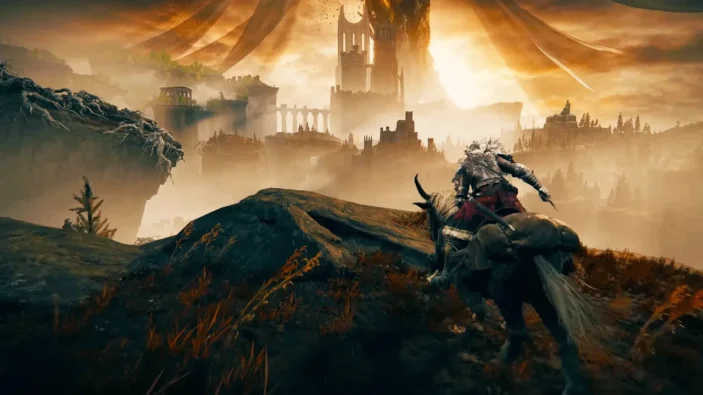

Elden Ring is a 2022 action role-playing game developed by FromSoftware. It was directed by Hidetaka Miyazaki with worldbuilding provided by American fantasy writer George R. R. Martin. It was published for PlayStation 4, PlayStation 5, Windows, Xbox One, and Xbox Series X/S on February 25 in Japan by FromSoftware and internationally by Bandai Namco Entertainment. Set in the Lands Between, players control a customizable player character on a quest to repair the Elden Ring and become the new Elden Lord.
FromSoftware wanted to create an open-world game based on Dark Souls. Miyazaki admired Martin's previous work and hoped that his contributions would produce a more accessible narrative than those of the company's earlier games. Martin was given unrestricted freedom to design the backstory, while Miyazaki was lead writer for the in-game narrative. However, the game's narrative is still presented through flavor text, dialogue, visual narrative, and players' interpretations. The developers concentrated on environmental scale, stat management, and the story; the scale required the construction of several structures around its world.
Gameplay
Elden Ring is an action role-playing game set in third-person perspective. It includes elements that are similar to those in other FromSoftware-developed games, such as the Dark Souls series, Bloodborne, and Sekiro: Shadows Die Twice. The game is set in an open world; players can freely explore the Lands Between and its six main areas, which include Limgrave—an area of grassy plains and ancient ruins—and Caelid, a reddish wasteland home to undead monsters. The open world is explored using the character's mount Torrent as the main mode of transportation, though players may use fast travel outside combat. Throughout the game, players encounter non-player characters (NPCs) and enemies, including demigods who rule each main area and serve as the game's main bosses. Aside from the main areas, Elden Ring has hidden dungeons, catacombs, tunnels, and caves where players can fight bosses and gather helpful items.
Synopsis
Elden Ring takes place in the Lands Between, a realm blessed by entities called outer gods. Most prominent is the Greater Will, who created the Elden Ring a collection of runes that govern physics. The Greater Will's emissary, the Two Fingers, made a woman named Marika the Elden Ring's vessel, ascending her to godhood. She then formed a dynasty called the Golden Order alongside a consort, the Elden Lord; two held this title: Godfrey, a barbarian who was later banished; and Radagon, Marika's male alter-ego. She also planted a massive, golden tree called the Erdtree that empowers the realm's inhabitants. Finally, Marika removed the Rune of Death from the Elden Ring and entrusted it to her bodyguard, Maliketh, causing the souls of the deceased in the Lands Between to not pass on and instead be reborn through the Erdtree. However, the Golden Order also persecuted certain people, such as the horned Omens and exiled humans called Tarnished. The exiled Tarnished were gifted power by an unknown source, resurrecting and granting them immortality, and were called back to the Lands Between to repair the Elden Ring and become the new Elden Lord. Those summoned include: Goldmask, a fundamentalist seeking to revitalize the Golden Order; Fia, a deathbed companion who is attempting to revive Godwyn; Dung Eater, a criminal who wants to strip everyone in the Lands Between of the Erdtree's grace; Sir Gideon Ofnir, a spymaster researching current events; and the player character, a Tarnished of no renown.
Development and Release
Production of the game began in early 2017 following the release of The Ringed City, a piece of downloadable content (DLC) for Dark Souls III. Elden Ring was developed alongside Sekiro: Shadows Die Twice, which Miyazaki also directed. He said although the combat in Elden Ring has similarities to that in Sekiro, neither game directly inspired the mechanics of the other. FromSoftware simultaneously developed both games using a "co-director" structure in which each of the games had a staff member acting as director through its first stages of development. Miyazaki would then provide direction on the game's mechanics, art, and music. Yui Tanimura, who previously directed Dark Souls II and co-directed Dark Souls III, served as co-director for the game. The design team of Elden Ring concentrated on environmental scale, roleplaying, and storytelling as the main elements. Developers credited the scale with responsibility for creating a sense of diversity, and intended the roleplaying elements to allow for a variety of player-environment interactions. Increasing the game's scale required the creation of several explorable structures, which the team conjoined in the open world. Miyazaki named Shadow of the Colossus, The Elder Scrolls, The Witcher 3, and The Legend of Zelda: Breath of the Wild as design influences for Elden Ring. He credited the tabletop role-playing game RuneQuest, and the novels The Lord of the Rings and The Eternal Champion as inspirations for the game's story. Tsukasa Saitoh, Shoi Miyazawa, Tai Tomisawa, Yuka Kitamura, and Yoshimi Kudo composed Elden Ring's original score. Elden Ring was revealed at E3 2019 in June. Some information about the game had previously been leaked online due to a vulnerability of the servers at Bandai Namco Entertainment. Elden Ring was widely anticipated on announcement but no further material was released until a trailer was shown in June 2021.Playtesting was facilitated by Bandai Namco, which in November 2021 initially released the game as a closed beta that players could sign up to test. The game's full release was scheduled for January 21, 2022, but was postponed to February 25 the same year. Elden Ring had performance issues at launch; players complained of an insufficient frame rate. Bandai Namco addressed some of these problems through software patches and updates. In February 2023, the downloadable content (DLC) expansion Shadow of the Erdtree was announced. It was released on June 20, 2024.
